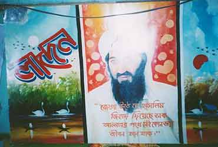
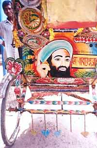
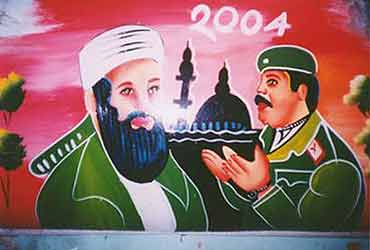

|
|
|
|||||||||||||||||||||||||||||||||||||||
|
|
||||||||||||||||||||||||||||||||||||||||
|
|
|
|
||||||||||||||||||||||||||||||||||||||
|
|
|
|||||||||||||||||||||||||||||||||||||||
 Photographs by Shaon OPINION Rickshaw Revelations Ricksha art? As political indicator in Bangladesh? Yes. Ricksha pictures tend to be ignored by the gentry as vulgar and not art, but the gentry ignore them at their peril. JOANNA KIRKPATRICK
As the well-known journalist Bertil Lintner wrote, "According to a foreign diplomat in Dhaka, ‘In the 1960s and 1970s, it was the leftists who were seen as incorruptible purists. Today, the role model for many young men in rural areas is the dedicated Islamic cleric with his skull cap, flowing robes and beard.’" Life has become grim for rural leftists today. In the past few months, leftists are being hunted down by a notorious Islamist gang leader in west and northwest Bangladesh, a religious fanatic called Bangla Bhai. The leftists being hunted are villagers belonging to various factions, the most well-known of which is the Purba Banglar Communist Party (PBCP), or Sarbahara group.
As recently reported in Frontline magazine (June 19-July 02, 2004, article by Haroon Habib writing from Dhaka), mostly Bangla language newspapers report that Bangla Bhai’s men levy protection tolls on villagers, order them to wear tupi (cap), go to mosque regularly, and force women to wear burqa or hijab. Those who defy in any way are subjected to physical abuse and/or their property is wasted.
Bangla Bhai’s cadres identify "anti-social elements" as they define it and mete out vigilante justice. They usually kill their victims in gruesome ways and often mutilate their bodies. In the last week of May, one of the three supposedly Left extremists caught by Bangla Bhai’s operatives was beaten to death and hanged upside down from a roadside tree in Bogra.
The main Dhaka newspapers deny such goings on, and the government of Khaleda Zia pretends that the police have been notified to capture him. However, in four northwestern districts—Rajshahi, Naogaon, Natore and Bogra—police are collaborating with this gang and justify what they do by saying they are undermanned and cannot control all the criminal elements. Not only does the government turn a blind eye, P.M. Begam Zia also appointed a Jama’ati as the Agriculture Minister, thus ensuring Islamist influence and a free rein for Bangla Bhai and other Islamist forces in the rural areas.
Bangla Bhai has an MA from Rajshahi University, and he’s not stupid. He launched his organisation Jagrota Muslim Janata Bangladesh (JMJB) on April 1, 2004, and claims that the group by now commands three lakh activists across the country. "Our goal is to root out Sarbahara men and corruption from society, seize illegal weapons and establish the ideal of the Rasul (Prophet Hazrat Mohammed (SA)," he recently told Hasibur Rahman Bilu, Borga correspondent of The Daily Star. Thus, secularists growing increasing anguished at what has happened to their Sonar Bangladesh, now see this gang operator as the instigator of Talebanisation in the entire country.
It is well known by now that until Bangla Bhai appeared, eastern Bangladesh—areas around Sylhet, Comilla, Chittagong and Teknaf—in particular had become the main hotbed of jihadism, terrorist training camps (see the various articles by Bertil Lintner), and anti-secularism. Much has been written on these developments, but so far none of the published material has ever provided grass-roots evidence of where public opinion, the views of the chhoto lok, stand. Yet these are the very people the jihadis and worse are so successful in organizing.
Thus, it behooves analysts to take a look at the rickshas, an important source of visual revelations on public opinion. Ricksha pictures tend to be ignored by the gentry as vulgar and not art, but my years of research on ricksha art have shown me all too clearly what the common man in the streets has on his mind.The gentry ignore him at their peril.
To illustrate my point, here are some photos, shot by a young Bangladeshi, Shaon, a few months ago in the town of Comilla.One picture shows Saddam. The last time Saddam Husain appeared in ricksha art, that I know about, was on Dhaka rickshas around the first Gulf War. I unfortunately was not able to visit Comilla at that time to see what they were painting on their rickshas, but I would not be surprised if Saddam was depicted.

In one photo we see both Bin Laden and Saddam, "together at last" (I say that sardonically, as the Bush policy in the US is that he and Saddam were connected, whereas all expert analysis says otherwise). Bin Laden is the main hero, and one of the paintings of him bears a call to self immolation in jihad.
Joanna Kirkpatrick, PhD is an anthropologist and researcher and author of multimedia CD-ROM: Transports of Delight. The Ricksha Arts of Bangladesh. Indiana University Press, 2003. Member of Mukto-Mona.
[Mukto-mona] [Articles] [Recent Debate] [Special Event ] [Moderators] [Forum]